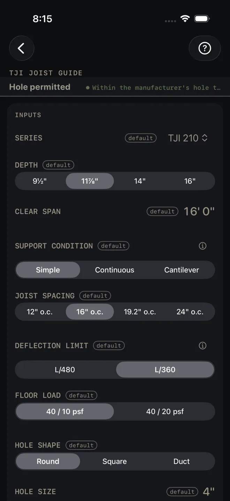
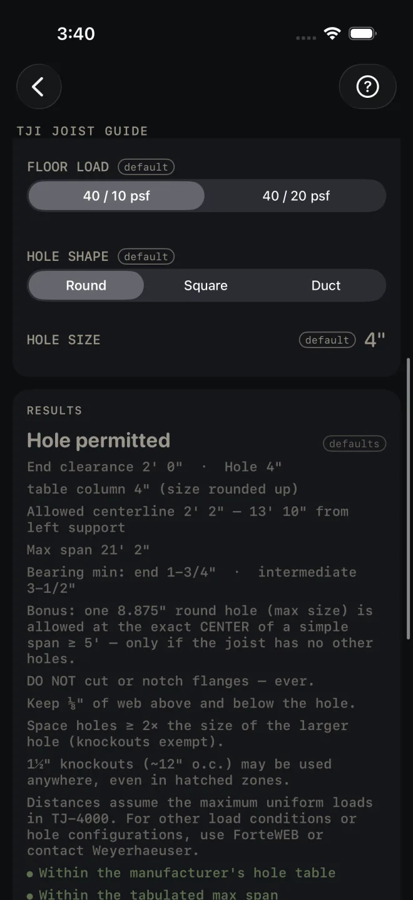
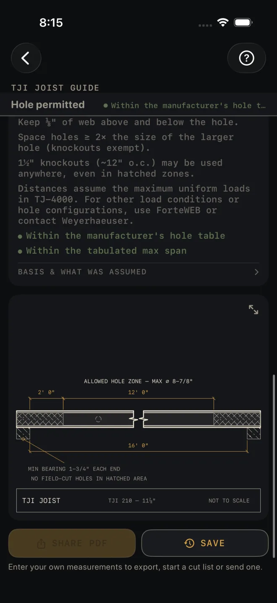

TJI Joist Guide
What it's for
Checking whether you can cut a hole in the web of a TJI joist, and where. You give it the joist series and depth, the clear span and the hole, and it tells you whether the hole is allowed, how far it has to stay from the supports, the longest span the joist is tabulated for, the minimum bearing, and a drawing of the joist with the no-hole zones hatched. The numbers come from the manufacturer's published tables, not a building code. It is for TJI joists only.
Step by step
This example uses the numbers the screen opens with.

1 2 3 4 5- SERIES — the TJI series you are using. Tap and pick from the list.
- DEPTH — the joist depth. The choices change with the series.
- CLEAR SPAN — inside face of one support to inside face of the other. The example is 16' 0".
- SUPPORT CONDITION — Simple is one span with a support at each end. Continuous runs over a middle support. Cantilever runs past its support. It sets how far from the bearing a hole has to stay.
- JOIST SPACING — on center.
- DEFLECTION LIMIT — how much bounce the span may have. L/480 is stiffer than L/360. FLOOR LOAD — live and dead load in pounds per square foot. These two, with the spacing, only change the maximum span. They do not move the hole.

7 8 9- HOLE SHAPE — Round, Square or Duct.
- HOLE SIZE — the diameter of a round hole, or the longest side of a square or rectangular one. With Duct the row reads DUCT WIDTH and a DUCT HEIGHT row appears under it.
- Read the answer: Hole permitted, with the distances under it.
Reading the results
- The headline is the verdict: Hole permitted or Hole not permitted.
- Where the hole can go. End clearance is the least distance from the inside face of a support to the near edge of the hole. Table column is the hole size the table was read at. If your size falls between columns, the next one up is used. Allowed centerline is the range for the center of the hole, measured from the inside face of the left support. In the example that is 2' 2" to 13' 10". With Continuous or Cantilever the line reads Support clearance (both ends). The larger distance for a middle support is held at both ends, because the screen cannot know which end is a true end. A note gives the shorter distance the table allows at a true end support.
- Max span is the longest span tabulated for this series, depth, spacing, deflection limit and load. If web stiffeners are needed at that span the line says so. If the table has no entry it reads Span not tabulated. Bearing min is the least bearing length at an end and at a middle support.
- The manufacturer's rules print on every result. Never cut or notch a flange. Keep web above and below the hole. Keep holes apart. The small knockouts can be used anywhere. There is also a note about one large hole at the exact center of a simple span. Read them on the screen, where the sizes are given.

5 6 7 8- The checks. Two lines, green when they pass. HOLE NOT PERMITTED means the table has no allowance for that hole in that joist. The first note says why. Make the hole smaller, change its shape, or use a deeper joist. SPAN EXCEEDS MAX means CLEAR SPAN is longer than the tabulated span. Go to a deeper joist or a heavier series, tighten JOIST SPACING, or shorten the span.
- BASIS & WHAT WAS ASSUMED — tap it. It says how the subfloor is assumed to be fastened for the spans and what to do if yours is not. It names the manufacturer's guide and date the tables came from, and says to verify against the current guide or the manufacturer's software.
- The drawing shows the joist on its supports. The hatched ends are where no field-cut hole may go. The clear zone between them is dimensioned, and the largest hole for this joist is named above it. Pinch to zoom, drag to pan, double-tap to reset. The expand button opens it full screen. See Reading the drawing.
- There is no material list on this screen. SHARE PDF makes a sheet with the drawing, the verdict and the notes. SAVE keeps the result in History. SHARE PDF stays grey until you change at least one input. SAVE stays lit, but while every input is still a default a tap only answers Enter your job's numbers first and saves nothing.
TJI Joist Guide, and the PDF and History buttons, are part of Pro, a one-time purchase. See
Free and Pro.
Common mistakes
- Measuring the span to the outside of the walls. CLEAR SPAN is inside face to inside face of the supports. The hole distances are measured from the same faces.
- Measuring to the center of the hole. The clearance is to the near edge of the hole. Use the Allowed centerline line if you are marking the center.
- Using it on another brand of I-joist. The tables are for TJI joists only.
- Treating it as a full design. The distances assume uniform loads. For a point load, more than one large hole, or anything the screen does not cover, the notes send you to the manufacturer.
Related
- Floor Joist — sawn lumber joists
- Beam Sizing
- Plumbing
- Reading the drawing
- Cut sheets and 1:1 templates
- Saving and History